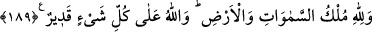

189. Göklerin ve yerin hükümranlığı Allah’ındır. Allah’ın her şeye gücü yeter.
“Göklerin ve yerin hükümranlığı” göklerde ve yerde, bu ikisinde bulunan her şeyde,
yaratmak-yok etmek; diriltmek-öldürmek; azap etmek-sevap vermek bakımından,
bunların hiçbirisinde, herhangi bir şekilde, kendisinden başka hiçbir varlığın etki ve
şâibesi olmaksızın dilediği şekilde tasarrufta bulunabilecek tarzda kahredici bir
hükümranlık sadece Allah’ındır.
O, göklerde ve yerde bulunanların her hallerinin mâlikidir. Yaptıkları şeyler sebebiyle
onlara azap eder. Hiç kimse, O’nun kudretinin kendisini yakalamasından uzak duramaz;
hiç kimse O’nun azabından kurtulamaz. O, dilediği her an herkesi yakalayıverir. “Allah
her şeye kadirdir.” Tabîî onları cezalandırmaya da... Kendisine azap edecek olan böyle
her şeyin sahibi, her şeyi yapabilen biri olunca, kişi O’nun azabından kurtulmayı nasıl
ümit edebilir?
Rivâyet edilir ki Hz. Peygamber (s.a.) Yahûdîlere Tevrat’taki bir şeyi sormuş.
Yahûdîler de ona Tevrat’takinin tersini bildirmişler ve kendilerini, doğru söylemiş gibi
göstererek bu yaptıklarından sevinç duymuşlar. Bu olay üzerine mezkûr âyet nâzil
olmuş.
Denilir ki: Âyet-i kerîmede kendilerinden bahsedilenler bütün münâfıklardır. Ve bu,
“yapmadıkları şeylerle övülmeyi isteyenler” ifadesinin zâhirine daha uygundur. Çünkü
münâfıklar, kalpleri tamamen küfürle dolu olduğu halde, îman etmiş gözükerek
yaptıklarından dolayı sevinirler ve îmanla uzaktan yakından ilgileri olmadığı halde, bu
îmanları sâyesinde mü’minlerin övgüsüne mazhar olmayı beklerlerdi. Mü’minlere son
derece düşman olmalarına rağmen, onları seviyormuş gibi gözükürlerdi.
Âyet-i kerîmedeki ism-i mevsûlü geniş mânası üzere kullanıp, “herhangi bir iyiliği
yaparak bu iyiliği beğenmenin verdiği bir sevince kapılan ve saklamayı gerektirecek
fazilet ve iyilik türleri ile insanların kendisini övmesini arzulayan herkesi” içine alacak
şekilde mânalandırmak daha doğrudur. Ayrıca sebebin husûsîliği, âyetin hükmünün
umûmî oluşuna bir zarar vermez.
Dünya metâıyla sevince kapılmak ve insanların kendisini övmesinden hoşlanmak,
mânevî yakınlıklara, uhrevî saâdetlere ulaşmaları engelleyen, şeytanların akıl
karıştırmalarına ve dünya hayatına aldanan nefs-i emmâre sahiplerinin sıfatlarındandır.
İmam Fahreddin Râzî tefsîrinde şöyle diyor: Şayet meseleye insaflıca bakacak
olursanız, çoğu insanın aynı durumda olduğunu görürsünüz. Çünkü insanlar dünyalık
elde etmek için her türlü çareye başvururlar; isteklerine ulaşınca da sevinirler. Sonra da
iffetli, sâdık ve dindar kişiler olarak övülmek isterler.
Hiç kimse tanıyamaz seni, senin tanıdığın gibi,
Kendine bir kıl ucu kadar ziyâdelik verme, görün olduğun gibi.